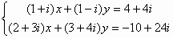

聯立二元一次方程(II)
更新日期: 2011年4月3日
這個版本的程式可解聯立二元一次方程，特別之處是用較小數目的變數記憶，另外若果輸入數據為整數(或分數)，答案會以分數形式表示，建議將計數機預先設定為假分數形式表示(按 SHIFT SETUP → → 2 )。
注意 : 若果不需要記存答案，程式中綠色部份可以不輸入。
程式 (分數版(59 / 55 bytes)，使用記憶為A,B,C及D)
?→B: ?→A: ?→C: B┘A→B: C┘A→C: ?→D: D: ?→A:
?→D: (D - AC)┘(Ans - AB→A◢ C - Ans B→B
例題1: 解聯立方程 :

按 Prog 1 再按 1 EXE 1 EXE 7 EXE 1 EXE - 1 EXE 1 EXE (顯示4) EXE (顯示3)
因此解答為 x = 4 及 y = 3.
程式執行完成後，按 RCL A 、RCL B分別顯示x的值、y的值。
例題2: 解聯立方程 :

程式需要在複數模式輸入才可以計算複數係數問題
按 Prog 1 再按 1 + i EXE 1 - i EXE 4 + 4i EXE
2 + 3i EXE 3 + 4i EXE - 10 + 24i EXE
( 此時計算機右上角出現R<=>I，表示為複數解)
(顯示x的實數部為1) 再按 Shift Re<=>Im (顯示x的虛數部為 2i)
EXE (顯示y的實數部為 2) 再按 Shift Re<=>Im (顯示第二個根虛數部為 3i)
因此解答為 x = 1 + 2i 及 y = 2 + 3i
註: 程式的限制為第二個輸入的係數不可以零，否則會出現Math ERROR。
返回 CASIO fx-50FH、fx-3650P II、fx-50FH II及fx-50F PLUS 程式集